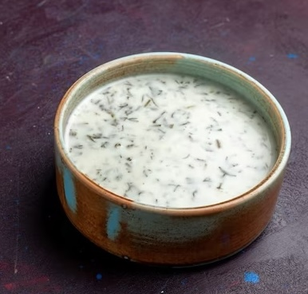

Matsoni Soup

Description
This satisfying, slightly tart yogurt-based soup with rice can be enjoyed hot or cold.
Ingredients
- Butter
- Sunflower oil
- Onion
- Garlic
- White rice
- Matsoni (yogurt)
- Water
- Fresh dill
- Salt and pepper
- Arajani (sour cream)
Steps
- Cook the rice.
- Saute the onions and garlic in butter and oil.
- Add yogurt, rice, and water and bring to a boil.
- Season with dill, salt, and peeper.
- Add water and sour cream as needed to reach desired consistency.